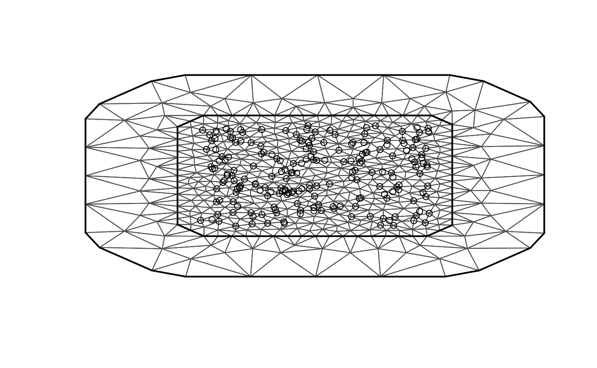
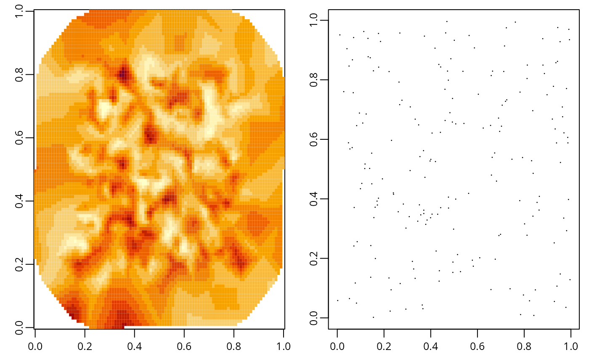

inlabru implementation of the rational SPDE approach
David Bolin and Alexandre B. Simas
2022-09-15
Source:vignettes/rspde_inlabru.Rmd
rspde_inlabru.RmdIntroduction
In this vignette we will present the inlabru implementation of the covariance-based rational SPDE approach. See the the Rational approximation with the rSPDE package vignette and (Xiong, Simas, and Bolin 2022)(https://www.tandfonline.com/doi/full/10.1080/10618600.2019.1665537).
We begin by providing a step-by-step illustration on how to use our implementation. To this end we will consider a real world data set that consists of precipitation measurements from the Paraná region in Brazil.
After the initial model fitting, we will show how to change some parameters of the model.
In the end, we will also provide an example in which we have replicates.
It is important to mention that one can improve the performance by using the PARDISO solver. Please, go to https://www.pardiso-project.org/r-inla/#license to apply for a license. Also, use inla.pardiso() for instructions on how to enable the PARDISO sparse library.
Example with real data
To illustrate our implementation of rSPDE in inlabru we will consider a dataset available in R-INLA. This data has also been used to illustrate the SPDE approach, see for instance the book Advanced Spatial Modeling with Stochastic Partial Differential Equations Using R and INLA and also the vignette Spatial Statistics using R-INLA and Gaussian Markov random fields. See also (Lindgren, Rue, and Lindström 2011)(https://rss.onlinelibrary.wiley.com/doi/full/10.1111/j.1467-9868.2011.00777.x) for theoretical details on the standard SPDE approach.
The data consist of precipitation measurements from the Paraná region in Brazil and were provided by the Brazilian National Water Agency. The data were collected at 616 gauge stations in Paraná state, south of Brazil, for each day in 2011.
An rSPDE model for precipitation
We will follow the vignette Spatial Statistics using R-INLA and Gaussian Markov random fields. As precipitation data are always positive, we will assume it is Gamma distributed. R-INLA uses the following parameterization of the Gamma distribution, \[\Gamma(\mu, c\phi): \pi (y) = \frac{1}{\Gamma(c\phi)} \left(\frac{c\phi}{\mu}\right)^{c\phi} y^{c\phi - 1} \exp\left(-\frac{c\phi y}{\mu}\right) .\] In this parameterization, the distribution has expected value \(E(x) = \mu\) and variance \(V(x) = \mu^2/(c\phi)\), where \(c\) is a fixed (known) scaling parameter and \(1/\phi\) is a dispersion parameter.
In this example \(\mu\) will be modelled using a stochastic model that includes both covariates and spatial structure, resulting in the latent Gaussian model for the precipitation measurements \[\begin{align} y_i\mid \mu(s_i), \theta &\sim \Gamma(\mu(s_i),c\phi)\\ \log (\mu(s)) &= \eta(s) = \sum_k f_k(c_k(s))+u(s)\\ \theta &\sim \pi(\theta) \end{align},\]
where \(y_i\) denotes the measurement taken at location \(s_i\), \(c_k(s)\) are covariates, \(u(s)\) is a mean-zero Gaussian Matérn field, and \(\theta\) is a vector containing all parameters of the model, including smoothness of the field. That is, by using the rSPDE model we will also be able to estimate the smoothness of the latent field.
Examining the data
We will be using inlabru. The inlabru package is available on CRAN and also on GitHub.
We begin by loading some libraries we need to get the data and build the plots.
library(gridExtra)
library(ggplot2)
library(lattice)
library(INLA)
library(inlabru)
library(splancs)
library(fields)Let us load the data and the border of the region
The data frame contains daily measurements at 616 stations for the year 2011, as well as coordinates and altitude information for the measurement stations. We will not analyze the full spatio-temporal data set, but instead look at the total precipitation in January, which we calculate as
Y <- rowMeans(PRprec[, 3 + 1:31])In the next snippet of code, we extract the coordinates and altitudes and remove the locations with missing values.
Let us build a plot for the precipitations:

The red line in the figure shows the coast line, and we expect the distance to the coast to be a good covariate for precipitation.
This covariate is not available, so let us calculate it for each observation location:
Now, let us plot the precipitation as a function of the possible covariates:
par(mfrow = c(2, 2))
plot(coords[, 1], Y, cex = 0.5, xlab = "Longitude")
plot(coords[, 2], Y, cex = 0.5, xlab = "Latitude")
plot(seaDist, Y, cex = 0.5, xlab = "Distance to sea")
plot(alt, Y, cex = 0.5, xlab = "Altitude")
Creating the rSPDE model
To use the inlabru implementation of the rSPDE model we need to load the functions:
To create a rSPDE model, one would the rspde.matern() function in a similar fashion as one would use the inla.spde2.matern() function.
Mesh
We can use R-INLA for creating the mesh. Let us create a mesh which is based on a non-convex hull to avoid adding many small triangles outside the domain of interest:
prdomain <- inla.nonconvex.hull(coords, -0.03, -0.05, resolution = c(100, 100))
prmesh <- inla.mesh.2d(boundary = prdomain, max.edge = c(0.45, 1), cutoff = 0.2)
plot(prmesh, asp = 1, main = "")
lines(PRborder, col = 3)
points(coords[, 1], coords[, 2], pch = 19, cex = 0.5, col = "red")
Setting up the data frame
In place of a inla.stack, we can set up a data.frame() to use inlabru. We refer the reader to vignettes in https://inlabru-org.github.io/inlabru/index.html for further details.
prdata <- data.frame(long = coords[,1], lat = coords[,2],
seaDist = inla.group(seaDist), y = Y)
coordinates(prdata) <- c("long","lat")Setting up the rSPDE model
To set up an rSPDEmodel, all we need is the mesh. By default it will assume that we want to estimate the smoothness parameter \(\nu\) and to do a covariance-based rational approximation of order 2.
Later in this vignette we will also see other options for setting up rSPDE models such as keeping the smoothness parameter fixed and/or increasing the order of the covariance-based rational approximation.
Therefore, to set up a model all we have to do is use the rspde.matern() function:
rspde_model <- rspde.matern(mesh = prmesh)Notice that this function is very reminiscent of R-INLA’s inla.spde2.matern() function.
We will assume the following linkage between model components and observations \[\eta(s) \sim A x(s) + A \text{ Intercept} + \text{seaDist}.\] \(\eta(s)\) will then be used in the observation-likelihood, \[y_i\mid \eta(s_i),\theta \sim \Gamma(\exp(\eta (s_i)), c\phi).\]
Model fitting
We will build a model using the distance to the sea \(x_i\) as a covariate through an improper CAR(1) model with \(\beta_{ij}=1(i\sim j)\), which R-INLA calls a random walk of order 1. We will fit it in inlabru’s style. For inlabru version 2.5.3.9002 or higher we can use the following compact synthax:
cmp <- y ~ Intercept(1) + distSea(seaDist, model="rw1") +
field(coordinates, model = rspde_model)For the current CRAN version of inlabru (version 2.5.3), one should use:
cmp <- y ~ Intercept(1) + distSea(seaDist, model="rw1") +
field(coordinates, model = rspde_model, mapper = bru_mapper(rspde_model))To fit the model we simply use the bru() function:
inlabru results
We can look at some summaries of the posterior distributions for the parameters, for example the fixed effects (i.e. the intercept) and the hyper-parameters (i.e. dispersion in the gamma likelihood, the precision of the RW1, and the parameters of the spatial field):
summary(rspde_fit)## inlabru version: 2.5.3
## INLA version: 22.09.02
## Components:
## Intercept: Model types main='linear', group='exchangeable', replicate='iid'
## distSea: Model types main='rw1', group='exchangeable', replicate='iid'
## field: Model types main='rgeneric', group='exchangeable', replicate='iid'
## Likelihoods:
## Family: 'Gamma'
## Data class: 'SpatialPointsDataFrame'
## Predictor: y ~ .
## Time used:
## Pre = 3.51, Running = 21.6, Post = 0.169, Total = 25.2
## Fixed effects:
## mean sd 0.025quant 0.5quant 0.975quant mode kld
## Intercept 1.943 0.054 1.838 1.943 2.048 1.943 0
##
## Random effects:
## Name Model
## distSea RW1 model
## field RGeneric2
##
## Model hyperparameters:
## mean sd 0.025quant
## Precision parameter for the Gamma observations 13.257 0.903 11.545
## Precision for distSea 9694.438 6329.916 2827.898
## Theta1 for field -1.105 0.330 -1.743
## Theta2 for field 1.123 0.136 0.829
## Theta3 for field -0.956 0.192 -1.370
## 0.5quant 0.975quant mode
## Precision parameter for the Gamma observations 13.236 15.100 13.208
## Precision for distSea 8042.919 26440.229 5750.532
## Theta1 for field -1.105 -0.395 -1.140
## Theta2 for field 1.125 1.386 1.138
## Theta3 for field -0.955 -0.586 -0.935
##
## Deviance Information Criterion (DIC) ...............: 2502.04
## Deviance Information Criterion (DIC, saturated) ....: 4749.15
## Effective number of parameters .....................: 82.49
##
## Watanabe-Akaike information criterion (WAIC) ...: 2504.78
## Effective number of parameters .................: 75.37
##
## Marginal log-Likelihood: -1262.73
## is computed
## Posterior summaries for the linear predictor and the fitted values are computed
## (Posterior marginals needs also 'control.compute=list(return.marginals.predictor=TRUE)')Let \(\theta_1 = \textrm{Theta1}\), \(\theta_2=\textrm{Theta2}\) and \(\theta_3=\textrm{Theta3}\). In terms of the SPDE \[(\kappa^2 I - \Delta)^{\alpha/2}(\tau u) = \mathcal{W},\] where \(\alpha = \nu + d/2\), we have that \[\tau = \exp(\theta_1),\quad \kappa = \exp(\theta_2), \] and by default \[\nu = 4\Big(\frac{\exp(\theta_3)}{1+\exp(\theta_3)}\Big).\] The number 4 comes from the upper bound for \(\nu\), which will be discussed later in this vignette.
In general, we have \[\nu = \nu_{UB}\Big(\frac{\exp(\theta_3)}{1+\exp(\theta_3)}\Big),\] where \(\nu_{UB}\) is the value of the upper bound for the smoothness parameter \(\nu\).
Another choice for prior for \(\nu\) is a truncated lognormal distribution and will also be discussed later in this vignette.
rSPDE-INLA results
We can obtain outputs with respect to parameters in the original scale by using the function rspde.result():
result_fit <- rspde.result(rspde_fit, "field", rspde_model)
summary(result_fit)## mean sd 0.025quant 0.5quant 0.975quant mode
## tau 0.349639 0.120507 0.178221 0.327751 0.646245 0.288878
## kappa 3.103640 0.417169 2.335220 3.088470 3.968990 3.064730
## nu 1.117560 0.152070 0.826964 1.115780 1.421680 1.114210We can also plot the posterior densities:

This function is reminiscent to the inla.spde.result() function with the main difference that it has the summary() and plot() methods implemented.
Predictions
Let us now obtain predictions (i.e. do kriging) of the expected precipitation on a dense grid in the region.
We begin by creating the grid in which we want to do the predictions. To this end, we can use the inla.mesh.projector() function:
nxy <- c(150, 100)
projgrid <- inla.mesh.projector(prmesh,
xlim = range(PRborder[, 1]),
ylim = range(PRborder[, 2]), dims = nxy
)This lattice contains 150 × 100 locations. One can easily change the resolution of the kriging prediction by changing nxy. Let us find the cells that are outside the region of interest so that we do not plot the estimates there.
Let us plot the locations that we will do prediction:
coord.prd <- projgrid$lattice$loc[xy.in, ]
plot(coord.prd, type = "p", cex = 0.1)
lines(PRborder)
points(coords[, 1], coords[, 2], pch = 19, cex = 0.5, col = "red")
Let us now create a data.frame() of the coordinates:
coord.prd.df <- data.frame(x1 = coord.prd[,1],
x2 = coord.prd[,2])
coordinates(coord.prd.df) <- c("x1", "x2")Since we are using distance to the sea as a covariate, we also have to calculate this covariate for the prediction locations. Finally, we add the prediction location to our prediction data.frame(), namely, coord.prd.df:
seaDist.prd <- apply(spDists(coord.prd,
PRborder[1034:1078, ],
longlat = TRUE
), 1, min)
coord.prd.df$seaDist <- seaDist.prdLet us now build the data frame with the results:
pred_df <- pred_obs@data
pred_df <- cbind(pred_df, pred_obs@coords)Finally, we plot the results. First the predicted mean:

Then, the std. deviations:

Further options of the inlabru implementation
We will now discuss some of the arguments that were introduced in our inlabru implementation of the rational approximation that are not present in R-INLA’s standard SPDE implementation.
In each case we will provide an illustrative example.
Changing the upper bound for the smoothness parameter
When we fit a rspde.matern() model we need to provide an upper bound for the smoothness parameter \(\nu\). The reason for that is that the sparsity of the precision matrix should be kept fixed during R-INLA’s estimation and the higher the value of \(\nu\) the denser the precision matrix gets.
This means that the higher the value of \(\nu\), the higher the computational cost to fit the model. Therefore, ideally, want to choose an upper bound for \(\nu\) as small as possible.
To change the value of the upper bound for the smoothness parameter, we must change the argument nu_upper_bound. The default value for nu_upper_bound is 4. Other common choices for nu_upper_bound are 2 and 1.
It is clear from the discussion above that the smaller the value of nu_upper_bound the faster the estimation procedure will be.
However, if we choose a value of nu_upper_bound which is too low, the “correct” value of \(\nu\) might not belong to the interval \((0,\nu_{UB})\), where \(\nu_{UB}\) is the value of nu_upper_bound. Hence, one might be forced to increase nu_upper_bound and estimate again, which, obviously will increase the computational cost as we will need to do more than one estimation.
Let us illustrate by considering the same model we considered above for the precipitation in Paraná region in Brazil and consider nu_upper_bound equal to 2, which is generally a good choice for nu_upper_bound.
We simply use the function rspde.matern() with the argument nu_upper_bound set to 2:
rspde_model_2 <- rspde.matern(mesh = prmesh, nu_upper_bound = 2)Let us fit the above model:
# For inlabru 2.5.3.9002 or above:
cmp2 <- y ~ Intercept(1) + distSea(seaDist, model="rw1") +
field(coordinates, model = rspde_model_2)
# For inlabru 2.5.3:
cmp2 <- y ~ Intercept(1) + distSea(seaDist, model="rw1") +
field(coordinates, model = rspde_model_2, mapper=bru_mapper(rspde_model_2))
rspde_fit_2 <- bru(cmp2,
family = "Gamma", data = prdata,
options=list(
verbose = FALSE,
control.inla = list(int.strategy = "eb"),
control.predictor = list(compute = TRUE),
inla.mode = "experimental")
)Let us see the summary of the fit:
summary(rspde_fit_2)## inlabru version: 2.5.3
## INLA version: 22.09.02
## Components:
## Intercept: Model types main='linear', group='exchangeable', replicate='iid'
## distSea: Model types main='rw1', group='exchangeable', replicate='iid'
## field: Model types main='rgeneric', group='exchangeable', replicate='iid'
## Likelihoods:
## Family: 'Gamma'
## Data class: 'SpatialPointsDataFrame'
## Predictor: y ~ .
## Time used:
## Pre = 3.58, Running = 9.41, Post = 0.0746, Total = 13.1
## Fixed effects:
## mean sd 0.025quant 0.5quant 0.975quant mode kld
## Intercept 1.942 0.057 1.831 1.942 2.053 1.942 0
##
## Random effects:
## Name Model
## distSea RW1 model
## field RGeneric2
##
## Model hyperparameters:
## mean sd 0.025quant
## Precision parameter for the Gamma observations 13.172 9.02e-01 11.47
## Precision for distSea 12376.264 1.15e+04 2319.38
## Theta1 for field -1.471 8.82e-01 -3.26
## Theta2 for field 1.123 3.32e-01 0.46
## Theta3 for field 0.718 9.37e-01 -1.01
## 0.5quant 0.975quant mode
## Precision parameter for the Gamma observations 13.146 1.50e+01 13.10
## Precision for distSea 9020.918 4.28e+04 5269.58
## Theta1 for field -1.445 1.97e-01 -1.35
## Theta2 for field 1.126 1.77e+00 1.14
## Theta3 for field 0.673 2.66e+00 0.51
##
## Deviance Information Criterion (DIC) ...............: 2502.66
## Deviance Information Criterion (DIC, saturated) ....: 4749.77
## Effective number of parameters .....................: 80.88
##
## Watanabe-Akaike information criterion (WAIC) ...: 2505.01
## Effective number of parameters .................: 73.70
##
## Marginal log-Likelihood: -1262.61
## is computed
## Posterior summaries for the linear predictor and the fitted values are computed
## (Posterior marginals needs also 'control.compute=list(return.marginals.predictor=TRUE)')Let us compare with the cost from the previous fit, with the default value of nu_upper_bound of 4:
# nu_upper_bound = 4
rspde_fit$cpu.used## Pre Running Post Total
## 3.5055430 21.5714381 0.1692591 25.2462401
# nu_upper_bound = 2
rspde_fit_2$cpu.used## Pre Running Post Total
## 3.58131003 9.40514183 0.07464099 13.06109285We can see that the fit for nu_upper_bound equal to 2 was considerably faster.
Finally, let us get the result the user’s scale and see the estimate for \(\nu\):
result_fit_2 <- rspde.result(rspde_fit_2, "field", rspde_model_2)
summary(result_fit_2)## mean sd 0.025quant 0.5quant 0.975quant mode
## tau 0.332077 0.321911 0.0387095 0.236092 1.20673 0.104078
## kappa 3.243950 1.086580 1.5934600 3.085320 5.82046 2.776330
## nu 1.291030 0.362684 0.5382850 1.323460 1.86753 1.475300Changing the order of the rational approximation
To change the order of the rational approximation all we have to do is set the argument rspde_order to the desired value. The current available possibilities are 1,2,3,…, up to 8.
The higher the order of the rational approximation, the more accurate the results will be, however, the higher the computational cost will be.
The default rspde_order of 2 is generally a good choice and reasonably accurate. See the vignette Rational approximation with the rSPDE package for further details on the order of the rational approximation and some comparison with the Matérn covariance.
Let us fit the above model with the covariance-based rational approximation of order 3.
- We build a new model:
rspde_model_order_3 <- rspde.matern(mesh = prmesh,
rspde_order = 3,
nu_upper_bound = 2
)- Now, we fit the model:
# For inlabru 2.5.3.9002 or above:
cmp3 <- y ~ Intercept(1) + distSea(seaDist, model = "rw1") +
field(coordinates, model = rspde_model_order_3)
# For inlabru 2.5.3:
cmp3 <- y ~ Intercept(1) + distSea(seaDist, model = "rw1") +
field(coordinates, model = rspde_model_order_3,
mapper = bru_mapper(rspde_model_order_3))
rspde_fit_order_3 <- bru(cmp3,
data = prdata,
family = "Gamma",
options = list(
verbose = FALSE,
control.inla = list(int.strategy = "eb"),
control.predictor = list(compute = TRUE),
inla.mode = "experimental")
)Let us see the summary:
summary(rspde_fit_order_3)## inlabru version: 2.5.3
## INLA version: 22.09.02
## Components:
## Intercept: Model types main='linear', group='exchangeable', replicate='iid'
## distSea: Model types main='rw1', group='exchangeable', replicate='iid'
## field: Model types main='rgeneric', group='exchangeable', replicate='iid'
## Likelihoods:
## Family: 'Gamma'
## Data class: 'SpatialPointsDataFrame'
## Predictor: y ~ .
## Time used:
## Pre = 3.42, Running = 16.5, Post = 0.0911, Total = 20
## Fixed effects:
## mean sd 0.025quant 0.5quant 0.975quant mode kld
## Intercept 1.944 0.053 1.841 1.944 2.047 1.944 0
##
## Random effects:
## Name Model
## distSea RW1 model
## field RGeneric2
##
## Model hyperparameters:
## mean sd 0.025quant
## Precision parameter for the Gamma observations 13.244 0.854 11.655
## Precision for distSea 9901.841 7978.114 2449.529
## Theta1 for field -1.273 0.430 -2.395
## Theta2 for field 1.173 0.117 0.818
## Theta3 for field 0.371 0.409 -0.894
## 0.5quant 0.975quant mode
## Precision parameter for the Gamma observations 13.211 1.50e+01 13.136
## Precision for distSea 7615.956 3.11e+04 4954.837
## Theta1 for field -0.676 5.60e-02 -1.344
## Theta2 for field 1.022 1.48e+00 1.193
## Theta3 for field -0.197 1.44e+00 0.439
##
## Deviance Information Criterion (DIC) ...............: 2502.89
## Deviance Information Criterion (DIC, saturated) ....: 4750.00
## Effective number of parameters .....................: 82.80
##
## Watanabe-Akaike information criterion (WAIC) ...: 2505.18
## Effective number of parameters .................: 75.21
##
## Marginal log-Likelihood: -1260.67
## is computed
## Posterior summaries for the linear predictor and the fitted values are computed
## (Posterior marginals needs also 'control.compute=list(return.marginals.predictor=TRUE)')Let us compare the cost of having rspde_order=3 and nu_upper_bound=2 with the cost of having rspde_order=2 and nu_upper_bound=4:
# nu_upper_bound = 4
rspde_fit$cpu.used## Pre Running Post Total
## 3.5055430 21.5714381 0.1692591 25.2462401
# nu_upper_bound = 2
rspde_fit_order_3$cpu.used## Pre Running Post Total
## 3.42425108 16.48136902 0.09112883 19.99674892Let us now see the summary in the original scale:
result_fit_order_3 <- rspde.result(rspde_fit_order_3,
"field", rspde_model_order_3)
summary(result_fit_order_3)## mean sd 0.025quant 0.5quant 0.975quant mode
## tau 0.307931 0.147846 0.129068 0.273233 0.696187 0.221372
## kappa 3.251820 0.372967 2.517920 3.252190 3.989120 3.250630
## nu 1.177280 0.191384 0.756736 1.194490 1.503560 1.236840Let us see the plots of the posterior marginal densities:
One can check the order of the rational approximation by using the rational.order() function. It also allows another way to change the order of the rational order, by using the corresponding rational.order<-() function.
Here to check the models:
rational.order(rspde_model)## [1] 2
rational.order(rspde_model_order_3)## [1] 3Let us now change the order of the rspde_model object to be 1:
rational.order(rspde_model) <- 1Let us fit this new model:
# For inlabru 2.5.3.9002 or above
cmp.1 <- y ~ Intercept(1) + distSea(seaDist, model = "rw1") +
field(coordinates, model = rspde_model)
# For inlabru 2.5.3:
cmp.1 <- y ~ Intercept(1) + distSea(seaDist, model = "rw1") +
field(coordinates, model = rspde_model, mapper =
bru_mapper(rspde_model))
rspde_fit_order_1 <- bru(cmp.1,
family = "Gamma", data = prdata,
options=list(
verbose = FALSE,
control.inla = list(int.strategy = "eb"),
control.predictor = list(compute = TRUE),
inla.mode = "experimental")
)Here is the summary:
summary(rspde_fit_order_1)## inlabru version: 2.5.3
## INLA version: 22.09.02
## Components:
## Intercept: Model types main='linear', group='exchangeable', replicate='iid'
## distSea: Model types main='rw1', group='exchangeable', replicate='iid'
## field: Model types main='rgeneric', group='exchangeable', replicate='iid'
## Likelihoods:
## Family: 'Gamma'
## Data class: 'SpatialPointsDataFrame'
## Predictor: y ~ .
## Time used:
## Pre = 3.71, Running = 13.6, Post = 0.0719, Total = 17.4
## Fixed effects:
## mean sd 0.025quant 0.5quant 0.975quant mode kld
## Intercept 1.944 0.055 1.837 1.944 2.052 1.944 0
##
## Random effects:
## Name Model
## distSea RW1 model
## field RGeneric2
##
## Model hyperparameters:
## mean sd 0.025quant
## Precision parameter for the Gamma observations 13.208 0.690 11.916
## Precision for distSea 7524.698 3346.342 3209.973
## Theta1 for field -0.983 0.307 -1.681
## Theta2 for field 1.082 0.119 0.825
## Theta3 for field -1.020 0.182 -1.428
## 0.5quant 0.975quant mode
## Precision parameter for the Gamma observations 13.183 14.646 13.12
## Precision for distSea 6812.830 16147.456 5588.36
## Theta1 for field -0.962 -0.288 -1.00
## Theta2 for field 1.077 1.343 1.09
## Theta3 for field -1.032 -0.609 -1.01
##
## Deviance Information Criterion (DIC) ...............: 2503.24
## Deviance Information Criterion (DIC, saturated) ....: 4750.34
## Effective number of parameters .....................: 81.97
##
## Watanabe-Akaike information criterion (WAIC) ...: 2505.39
## Effective number of parameters .................: 74.43
##
## Marginal log-Likelihood: -1262.44
## is computed
## Posterior summaries for the linear predictor and the fitted values are computed
## (Posterior marginals needs also 'control.compute=list(return.marginals.predictor=TRUE)')Changing the type of the rational approximation
We have three rational approximations available. The BRASIL algorithm (Hofreither 2021)(https://doi.org/10.1007/s11075-020-01042-0), and two “versions” of the Clenshaw-Lord Chebyshev-Pade algorithm, one with lower bound zero and another with the lower bound given in (Xiong, Simas, and Bolin 2022)(https://arxiv.org/abs/2209.04670).
The type of rational approximation can be chosen by setting the type.rational.approx argument in the rspde.matern function. The BRASIL algorithm corresponds to the choice brasil, the Clenshaw-Lord Chebyshev pade with zero lower bound and non-zero lower bounds are given, respectively, by the choices chebfun and chebfunLB.
Let us fit a model assigning a brasil rational approximation. We will consider a model with the order of the rational approximation being 1:
rspde_model_brasil <- rspde.matern(prmesh, rspde_order = 1,
type.rational.approx = "brasil")
# For inlabru 2.5.3.9002 or above
cmp.1.brasil <- y ~ Intercept(1) + distSea(seaDist, model = "rw1") +
field(coordinates, model = rspde_model_brasil)
# For inlabru 2.5.3:
cmp.1.brasil <- y ~ Intercept(1) + distSea(seaDist, model = "rw1") +
field(coordinates, model = rspde_model_brasil, mapper =
bru_mapper(rspde_model_brasil))
rspde_fit_order_1_brasil <- bru(cmp.1.brasil,
family = "Gamma", data = prdata,
options = list(
verbose = FALSE,
control.inla = list(int.strategy = "eb"),
control.predictor = list(compute = TRUE),
inla.mode = "experimental")
)Let us get the summary:
summary(rspde_fit_order_1_brasil)## inlabru version: 2.5.3
## INLA version: 22.09.02
## Components:
## Intercept: Model types main='linear', group='exchangeable', replicate='iid'
## distSea: Model types main='rw1', group='exchangeable', replicate='iid'
## field: Model types main='rgeneric', group='exchangeable', replicate='iid'
## Likelihoods:
## Family: 'Gamma'
## Data class: 'SpatialPointsDataFrame'
## Predictor: y ~ .
## Time used:
## Pre = 3.39, Running = 10, Post = 0.0818, Total = 13.5
## Fixed effects:
## mean sd 0.025quant 0.5quant 0.975quant mode kld
## Intercept 1.942 0.058 1.829 1.942 2.056 1.942 0
##
## Random effects:
## Name Model
## distSea RW1 model
## field RGeneric2
##
## Model hyperparameters:
## mean sd 0.025quant
## Precision parameter for the Gamma observations 13.191 0.854 11.575
## Precision for distSea 8424.759 2044.995 5256.652
## Theta1 for field -0.887 0.288 -1.537
## Theta2 for field 1.009 0.133 0.719
## Theta3 for field -1.064 0.182 -1.469
## 0.5quant 0.975quant mode
## Precision parameter for the Gamma observations 13.168 14.942 13.130
## Precision for distSea 8179.099 13690.776 7541.589
## Theta1 for field -0.854 -0.240 -0.917
## Theta2 for field 0.999 1.299 1.023
## Theta3 for field -1.082 -0.656 -1.045
##
## Deviance Information Criterion (DIC) ...............: 2502.37
## Deviance Information Criterion (DIC, saturated) ....: 4749.47
## Effective number of parameters .....................: 82.33
##
## Watanabe-Akaike information criterion (WAIC) ...: 2504.59
## Effective number of parameters .................: 74.78
##
## Marginal log-Likelihood: -1262.19
## is computed
## Posterior summaries for the linear predictor and the fitted values are computed
## (Posterior marginals needs also 'control.compute=list(return.marginals.predictor=TRUE)')Finally, similarly to the order of the rational approximation, one can check the order with the rational.type() function, and assign a new type with the rational.type<-() function.
rational.type(rspde_model)## [1] "chebfun"
rational.type(rspde_model_brasil)## [1] "brasil"Let us change the type of the rational approximation on the model with rational approximation of order 3:
rational.type(rspde_model_order_3) <- "brasil"
# For inlabru 2.5.3.9002 or above
cmp.3 <- y ~ Intercept(1) + distSea(seaDist, model = "rw1") +
field(coordinates, model = rspde_model_order_3)
# For inlabru 2.5.3:
cmp.3 <- y ~ Intercept(1) + distSea(seaDist, model = "rw1") +
field(coordinates, model = rspde_model_order_3, mapper =
bru_mapper(rspde_model_order_3))
rspde_fit_order_3_brasil <- bru(cmp.3,
family = "Gamma", data = prdata,
options = list(
verbose = FALSE,
control.inla = list(int.strategy = "eb"),
control.predictor = list(compute = TRUE),
inla.mode = "experimental")
)Let us get the summary:
summary(rspde_fit_order_3_brasil)## inlabru version: 2.5.3
## INLA version: 22.09.02
## Components:
## Intercept: Model types main='linear', group='exchangeable', replicate='iid'
## distSea: Model types main='rw1', group='exchangeable', replicate='iid'
## field: Model types main='rgeneric', group='exchangeable', replicate='iid'
## Likelihoods:
## Family: 'Gamma'
## Data class: 'SpatialPointsDataFrame'
## Predictor: y ~ .
## Time used:
## Pre = 3.21, Running = 19.7, Post = 0.0975, Total = 23
## Fixed effects:
## mean sd 0.025quant 0.5quant 0.975quant mode kld
## Intercept 1.944 0.053 1.839 1.944 2.048 1.944 0
##
## Random effects:
## Name Model
## distSea RW1 model
## field RGeneric2
##
## Model hyperparameters:
## mean sd 0.025quant
## Precision parameter for the Gamma observations 13.194 0.900 11.525
## Precision for distSea 9486.325 7255.089 2429.373
## Theta1 for field -1.785 0.633 -3.105
## Theta2 for field 1.305 0.246 0.834
## Theta3 for field 0.835 0.583 -0.293
## 0.5quant 0.975quant mode
## Precision parameter for the Gamma observations 13.157 15.07 13.074
## Precision for distSea 7452.616 28804.99 4958.325
## Theta1 for field -1.771 -0.56 -1.698
## Theta2 for field 1.300 1.81 1.274
## Theta3 for field 0.822 2.05 0.754
##
## Deviance Information Criterion (DIC) ...............: 2503.13
## Deviance Information Criterion (DIC, saturated) ....: 4750.23
## Effective number of parameters .....................: 84.34
##
## Watanabe-Akaike information criterion (WAIC) ...: 2504.88
## Effective number of parameters .................: 75.97
##
## Marginal log-Likelihood: -1261.56
## is computed
## Posterior summaries for the linear predictor and the fitted values are computed
## (Posterior marginals needs also 'control.compute=list(return.marginals.predictor=TRUE)')Estimating models with fixed smoothness
We can fix the smoothness, say \(\nu\), of the model by providing a non-NULL positive value for nu.
When the smoothness, \(\nu\), is fixed, we can have two possibilities:
\(\alpha = \nu + d/2\) is integer;
\(\alpha = \nu + d/2\) is not integer.
The first case, i.e., when \(\alpha\) is integer, has much less computational cost. Furthermore, the \(A\) matrix is different than the \(A\) matrix for the non-integer \(\alpha\).
If \(\nu\) is fixed, we have that the parameters returned by bru() are \[\kappa = \exp(\theta_1)\quad\hbox{and}\quad\tau = \exp(\theta_2).\] We will now provide illustrations for both scenarios. It is also noteworthy that just as with the case in which we estimate \(\nu\), we can also change the order of the rational approximation by changing the value of rspde_order. For both illustrations with fixed \(\nu\) below, we will only consider the order of the rational approximation of 2, that is, the default order.
Estimating models with fixed smoothness and non-integer \(\alpha\)
Recall that: \[\nu = \nu_{UB}\Big(\frac{\exp(\theta_3)}{1+\exp(\theta_3)}\Big).\] Thus, to illustrate, let us consider a fixed \(\nu\) given by the mean of \(\nu\) obtained from the first model we considered in this vignette, namely, the fit given by rspde_fit, which is approximately \(\nu = 1.21\).
Notice that for this \(\nu\), the value of \(\alpha\) is non-integer, so we can use the \(A\) matrix and the index of the first fitted model, which is also of order 2.
Therefore, all we have to do is build a new model in which we set nu to 1.21:
rspde_model_fix <- rspde.matern(mesh = prmesh, rspde_order = 2,
nu = 1.21
)Let us now fit the model:
Here we have the summary:
Now, the summary in the original scale:
Estimating models with fixed smoothness and integer \(\alpha\)
Since we are in dimension \(d=2\), and \(\nu>0\), the smallest value of \(\nu\) that makes \(\alpha = \nu + 1\) an integer is \(\nu=1\). This value is also close to the estimated mean of the first model we fitted and enclosed by the posterior marginal density of \(\nu\) for the first fit. Therefore, let us fit the model with \(\nu=1\).
Let us create a new model (remember to set nu=1):
rspde_model_fix_int1 <- rspde.matern(mesh = prmesh,
nu = 1
)The remaining is standard:
# For inlabru version 2.5.3.9002 and above:
cmp.int.1 <- y ~ Intercept(1) + distSea(seaDist, model = "rw1") +
field(coordinates, model = rspde_model_fix_int1)
# For inlabru version 2.5.3
cmp.int.1 <- y ~ Intercept(1) + distSea(seaDist, model = "rw1") +
field(coordinates, model = rspde_model_fix_int1, mapper =
bru_mapper(rspde_model_fix_int1))
rspde_fix_int_1 <- bru(cmp.int.1,
family = "Gamma",
data = prdata,
options = list(verbose = FALSE,
control.inla = list(int.strategy = "eb"),
control.predictor = list(
compute = TRUE
),
inla.mode = "experimental")
)Let us check the summary:
summary(rspde_fix_int_1)## inlabru version: 2.5.3
## INLA version: 22.09.02
## Components:
## Intercept: Model types main='linear', group='exchangeable', replicate='iid'
## distSea: Model types main='rw1', group='exchangeable', replicate='iid'
## field: Model types main='rgeneric', group='exchangeable', replicate='iid'
## Likelihoods:
## Family: 'Gamma'
## Data class: 'SpatialPointsDataFrame'
## Predictor: y ~ .
## Time used:
## Pre = 3.19, Running = 2.84, Post = 0.054, Total = 6.08
## Fixed effects:
## mean sd 0.025quant 0.5quant 0.975quant mode kld
## Intercept 1.945 0.054 1.839 1.945 2.051 1.945 0
##
## Random effects:
## Name Model
## distSea RW1 model
## field RGeneric2
##
## Model hyperparameters:
## mean sd 0.025quant
## Precision parameter for the Gamma observations 13.251 0.908 11.536
## Precision for distSea 10562.766 9590.116 2569.114
## Theta1 for field -0.862 0.309 -1.451
## Theta2 for field 1.033 0.352 0.311
## 0.5quant 0.975quant mode
## Precision parameter for the Gamma observations 13.23 15.111 13.189
## Precision for distSea 7709.38 35833.839 4794.326
## Theta1 for field -0.87 -0.233 -0.899
## Theta2 for field 1.04 1.697 1.087
##
## Deviance Information Criterion (DIC) ...............: 2502.47
## Deviance Information Criterion (DIC, saturated) ....: 4749.58
## Effective number of parameters .....................: 84.78
##
## Watanabe-Akaike information criterion (WAIC) ...: 2504.83
## Effective number of parameters .................: 76.88
##
## Marginal log-Likelihood: -1262.65
## is computed
## Posterior summaries for the linear predictor and the fitted values are computed
## (Posterior marginals needs also 'control.compute=list(return.marginals.predictor=TRUE)')and check the summary in the user’s scale:
rspde_result_int <- rspde.result(rspde_fix_int_1, "field", rspde_model_fix_int1)
summary(rspde_result_int)## mean sd 0.025quant 0.5quant 0.975quant mode
## tau 0.442975 0.141877 0.235691 0.418657 0.787606 0.374644
## kappa 2.984580 1.042990 1.374460 2.845720 5.423390 2.564240Changing the priors
We begin by recalling that the fitted rSPDE model returned by bru() contains the parameters \(\textrm{Theta1}\), \(\textrm{Theta2}\) and \(\textrm{Theta3}\). Let, again, \(\theta_1 = \textrm{Theta1}\), \(\theta_2=\textrm{Theta2}\) and \(\theta_3=\textrm{Theta3}\). In terms of the SPDE \[(\kappa^2 I - \Delta)^{\alpha/2}(\tau u) = \mathcal{W},\] where \(\alpha = \nu + d/2\).
Changing the priors of \(\tau\) and \(\kappa\)
We begin by dealing with \(\tau\) and \(\kappa\).
We have that \[\tau = \exp(\theta_1),\quad \kappa = \exp(\theta_2).\] The rspde.matern() function assumes a lognormal prior distribution for \(\tau\) and \(\kappa\). This prior distribution is obtained by assuming that \(\theta_1\) and \(\theta_2\) follow normal distributions. By default we assume \(\theta_1\) and \(\theta_2\) to be independent and to follow normal distributions \(\theta_1\sim N(\log(\tau_0), 10)\) and \(\theta_2\sim N(\log(\kappa_0), 10)\).
\(\kappa_0\) is suitably defined in terms of the mesh and \(\tau_0\) is defined in terms of \(\kappa_0\) and on the prior of the smoothness parameter.
If one wants to define the prior \[\theta_1 \sim N(\text{mean_theta_1}, \text{sd_theta_1}),\] one can simply set the argument prior.tau = list(meanlog=mean_theta_1, sdlog=sd_theta_1). Analogously, to define the prior \[\theta_2 \sim N(\text{mean_theta_2}, \text{sd_theta_2}),\] one can set the argument prior.kappa = list(meanlog=mean_theta_2, sdlog=sd_theta_2).
It is important to mention that, by default, the initial values of \(\tau\) and \(\kappa\) are \(\exp(\text{mean_theta_1})\) and \(\exp(\text{mean_theta_2})\), respectively. So, if the user does not change these parameters, and also does not change the initial values, the initial values of \(\tau\) and \(\kappa\) will be, respectively, \(\tau_0\) and \(\kappa_0\).
If one sets prior.tau = list(meanlog=mean_theta_1), the prior for \(\theta_1\) will be \[\theta_1 \sim N(\text{mean_theta_1}, 1),\] whereas, if one sets, prior.tau = list(sdlog=sd_theta_1), the prior will be \[\theta_1 \sim N(\log(\tau_0), \text{sd_theta_1}).\] Analogously, if one sets prior.kappa = list(meanlog=mean_theta_2), the prior for \(\theta_2\) will be \[\theta_2 \sim N(\text{mean_theta_2}, 1),\] whereas, if one sets, prior.kappa = list(sdlog=sd_theta_2), the prior will be \[\theta_2 \sim N(\log(\kappa_0), \text{sd_theta_2}).\]
Changing the prior of \(\nu\)
Finally, let us consider the smoothness parameter \(\nu\).
By default, we assume that \(\nu\) follows a beta distribution on the interval \((0,\nu_{UB})\), where \(\nu_{UB}\) is the upper bound for \(\nu\), with mean \(\nu_0=\min\{1, \nu_{UB}/2\}\) and variance \(\frac{\nu_0(\nu_{UB}-\nu_0)}{1+\phi_0}\), and we call \(\phi_0\) the precision parameter, whose default value is \[\phi_0 = \max\Big\{\frac{\nu_{UB}}{\nu_0}, \frac{\nu_{UB}}{\nu_{UB}-\nu_0}\Big\} + \phi_{inc}.\] The parameter \(\phi_{inc}\) is an increment to ensure that the prior beta density has boundary values equal to zero (where the boundary values are defined either by continuity or by limits). The default value of \(\phi_{inc}\) is 1. The value of \(\phi_{inc}\) can be changed by changing the argument nu.prec.inc in the rspde.matern() function. The higher the value of \(\phi_{inc}\) (that is, the value of nu.prec.inc) the more informative the prior distribution becomes.
Let us denote a beta distribution with support on \((0,\nu_{UB})\), mean \(\mu\) and precision parameter \(\phi\) by \(\mathcal{B}_{\nu_{UB}}(\mu,\phi)\).
If we want \(\nu\) to have a prior \[\nu \sim \mathcal{B}_{\nu_{UB}}(\text{nu_1},\text{prec_1}),\] one simply needs to set prior.nu = list(mean=nu_1, prec=prec_1). If one sets prior.nu = list(mean=nu_1), then \(\nu\) will have prior \[\nu \sim \mathcal{B}_{\nu_{UB}}(\text{nu_1},\phi_1),\] where \[\phi_1 = \max\Big\{\frac{\nu_{UB}}{\text{nu_1}}, \frac{\nu_{UB}}{\nu_{UB}-\text{nu_1}}\Big\} + \text{nu.prec.inc}.\]
Of one sets prior.nu = list(prec=prec_1), then \(\nu\) will have prior \[\nu\sim \mathcal{B}_{\nu_{UB}}(\nu_0, \text{prec_1}).\] It is also noteworthy that we have that, in terms of R-INLA’s parameters,
\[\nu = \nu_{UB}\Big(\frac{\exp(\theta_3)}{1+\exp(\theta_3)}\Big).\]
It is important to mention that, by default, if a beta prior distribution is chosen for the smoothness parameter \(\nu\), then the initial value of \(\nu\) is the mean of the prior beta distribution. So, if the user does not change this parameter, and also does not change the initial value, the initial value of \(\nu\) will be \(\min\{1,\nu_{UB}/2\}\).
We can have another possibility of prior distribution for \(\nu\), namely, a truncated lognormal distribution. The truncated lognormal distribution is defined in the following sense. We assume that \(\log(\nu)\) has prior distribution given by a truncated normal distribution with support \((-\infty,\log(\nu_{UB}))\), where \(\nu_{UB}\) is the upper bound for \(\nu\), with location parameter \(\mu_0 =\log(\nu_0)= \log\Big(\min\{1,\nu_{UB}/2\}\Big)\) and scale parameter \(\sigma_0 = 1\). More precisely, let \(\Phi(\cdot; \mu,\sigma)\) stand for the cumulative distribution function (CDF) of a normal distribution with mean \(\mu\) and standard deviation \(\sigma\). Then, \(\log(\nu)\) has cumulative distribution function given by \[F_{\log(\nu)}(x) = \frac{\Phi(x;\mu_0,\sigma_0)}{\Phi(\nu_{UB})},\quad x\leq \nu_{UB},\] and \(F_{\log(\nu)}(x) = 1\) if \(x>\nu_{UB}\). We will call \(\mu_0\) and \(\sigma_0\) the log-location and log-scale parameters of \(\nu\), respectively, and we say that \(\log(\nu)\) follows a truncated normal distribution with location parameter \(\mu_0\) and scale parameter \(\sigma_0\).
We also assume that, in terms of R-INLA’s parameters, \[\nu = \nu_{UB}\Big(\frac{\exp(\theta_3)}{1+\exp(\theta_3)}\Big).\]
To change the prior distribution of \(\nu\) to the truncated lognormal distribution, we need to set the argument prior.nu.dist="lognormal".
To change these parameters in the prior distribution to, say, log_nu_1 and log_sigma_1, one can simply set prior.nu = list(loglocation=log_nu_1, logscale=sigma_1).
If one sets prior.nu = list(loglocation=log_nu_1), the prior for \(\theta_3\) will be a truncated normal normal distribution with location parameter log_nu_1 and scale parameter 1. Analogously, if one sets, prior.nu = list(logscale=sigma_1), the prior for \(\theta_3\) will be a truncated normal distribution with location parameter \(\log(\nu_0)= \log\Big(\min\{1,\nu_{UB}/2\}\Big)\) and scale parameter sigma_1.
It is important to mention that, by default, if a truncated lognormal prior distribution is chosen for the smoothness parameter \(\nu\), then the initial value of \(\nu\) is the exponential of the log-location parameter of \(\nu\). So, if the user does not change this parameter, and also does not change the initial value, the initial value of \(\nu\) will be \(\min\{1,\nu_{UB}/2\}\).
Let us consider an example with the same dataset used in the first model of this vignette where we change the prior distribution of \(\nu\) from beta to lognormal. Let us also set nu_upper_bound to 2.
rspde_model_ln <- rspde.matern(mesh = prmesh, prior.nu.dist = "lognormal",
nu_upper_bound = 2
)Let us create the component:
# For inlabru 2.5.3.9002 and above:
cmp.ln <- y ~ Intercept(1) + distSea(seaDist, model="rw1") +
field(coordinates, model = rspde_model_ln)
# For inlabru 2.5.3:alpha
cmp.ln <- y ~ Intercept(1) + distSea(seaDist, model="rw1") +
field(coordinates, model = rspde_model_ln, mapper =
bru_mapper(rspde_model_ln))We can now fit the model:
rspde_fit_ln <- bru(cmp.ln,
data = prdata,
family = "Gamma",
options = list(verbose = FALSE,
control.inla = list(int.strategy = "eb"),
control.predictor = list(
compute = TRUE
),
inla.mode = "experimental")
)We have the summary:
summary(rspde_fit_ln)## inlabru version: 2.5.3
## INLA version: 22.09.02
## Components:
## Intercept: Model types main='linear', group='exchangeable', replicate='iid'
## distSea: Model types main='rw1', group='exchangeable', replicate='iid'
## field: Model types main='rgeneric', group='exchangeable', replicate='iid'
## Likelihoods:
## Family: 'Gamma'
## Data class: 'SpatialPointsDataFrame'
## Predictor: y ~ .
## Time used:
## Pre = 3.21, Running = 9.51, Post = 0.0751, Total = 12.8
## Fixed effects:
## mean sd 0.025quant 0.5quant 0.975quant mode kld
## Intercept 1.939 0.052 1.837 1.939 2.042 1.939 0
##
## Random effects:
## Name Model
## distSea RW1 model
## field RGeneric2
##
## Model hyperparameters:
## mean sd 0.025quant
## Precision parameter for the Gamma observations 13.202 9.05e-01 11.514
## Precision for distSea 12579.677 1.02e+04 2291.432
## Theta1 for field -1.530 1.12e+00 -3.631
## Theta2 for field 1.222 3.24e-01 0.554
## Theta3 for field 0.868 1.07e+00 -1.204
## 0.5quant 0.975quant mode
## Precision parameter for the Gamma observations 13.169 15.08 13.100
## Precision for distSea 9807.221 39476.62 5788.857
## Theta1 for field -1.573 0.77 -1.724
## Theta2 for field 1.235 1.83 1.282
## Theta3 for field 0.851 3.02 0.795
##
## Deviance Information Criterion (DIC) ...............: 2502.07
## Deviance Information Criterion (DIC, saturated) ....: 4749.17
## Effective number of parameters .....................: 83.29
##
## Watanabe-Akaike information criterion (WAIC) ...: 2503.97
## Effective number of parameters .................: 75.25
##
## Marginal log-Likelihood: -1263.14
## is computed
## Posterior summaries for the linear predictor and the fitted values are computed
## (Posterior marginals needs also 'control.compute=list(return.marginals.predictor=TRUE)')Also, we can have the summary in the user’s scale:
rspde_result_ln <- rspde.result(rspde_fit_ln, "field", rspde_model_ln)
summary(rspde_result_ln)## mean sd 0.025quant 0.5quant 0.975quant mode
## tau 0.416174 0.671278 0.0267576 0.207227 2.13438 0.0652556
## kappa 3.573670 1.141400 1.7508200 3.442980 6.18624 3.1781200
## nu 1.337340 0.396272 0.4657070 1.401500 1.90543 1.6758500and the plot of the posterior marginal densities
Changing the initial values
The inital values to be used by R-INLA’s optimization algorithm can be changed by setting the arguments start.ltau, start.lkappa and start.nu.
start.ltauwill be the initial value for \(\log(\tau)\), that is, the logarithm of \(\tau\).start.lkappawill be the inital value for \(\log(\kappa)\), that is, the logarithm of \(\kappa\).start.nuwill be the initial value for \(\nu\). Notice that here the initial value is not on the log scale.
One can change the initial value of one or more parameters.
For instance, let us consider the example with precipitation data, rspde_order=3, but change the initial values to the ones close to the fitted value when considering the default rspde_order (which is 2):
rspde_model_order_3_start <- rspde.matern(mesh = prmesh, rspde_order = 3,
nu_upper_bound = 2,
start.lkappa = result_fit$summary.log.kappa$mean,
start.ltau = result_fit$summary.log.tau$mean,
start.nu = result_fit$summary.nu$mean
)Let us now define the component and fit:
# For inlabru 2.5.3.9002 and above:
cmp.3.start <- y ~ Intercept(1) + distSea(seaDist, model = "rw1") +
field(coordinates, model = rspde_model_order_3_start)
# For inlabru version 2.5.3
cmp.3.start <- y ~ Intercept(1) + distSea(seaDist, model = "rw1") +
field(coordinates, model = rspde_model_order_3_start, mapper =
bru_mapper(rspde_model_order_3_start))
rspde_fit_order_3_start <- bru(cmp.3.start,
family = "Gamma",
data = prdata,
options = list(
verbose = FALSE,
control.inla = list(int.strategy = "eb"),
control.predictor = list(
compute = TRUE
),
inla.mode = "experimental")
)We have the summary:
summary(rspde_fit_order_3_start)## inlabru version: 2.5.3
## INLA version: 22.09.02
## Components:
## Intercept: Model types main='linear', group='exchangeable', replicate='iid'
## distSea: Model types main='rw1', group='exchangeable', replicate='iid'
## field: Model types main='rgeneric', group='exchangeable', replicate='iid'
## Likelihoods:
## Family: 'Gamma'
## Data class: 'SpatialPointsDataFrame'
## Predictor: y ~ .
## Time used:
## Pre = 3.33, Running = 13.4, Post = 0.0859, Total = 16.8
## Fixed effects:
## mean sd 0.025quant 0.5quant 0.975quant mode kld
## Intercept 1.944 0.056 1.834 1.944 2.054 1.944 0
##
## Random effects:
## Name Model
## distSea RW1 model
## field RGeneric2
##
## Model hyperparameters:
## mean sd 0.025quant
## Precision parameter for the Gamma observations 13.229 0.879 11.612
## Precision for distSea 6791.234 3254.457 2320.209
## Theta1 for field -1.846 0.764 -3.668
## Theta2 for field 1.371 0.302 0.863
## Theta3 for field 0.871 0.662 -0.250
## 0.5quant 0.975quant mode
## Precision parameter for the Gamma observations 13.188 15.076 13.086
## Precision for distSea 6172.968 14913.336 5025.336
## Theta1 for field -1.850 -0.551 -1.402
## Theta2 for field 1.367 2.088 1.195
## Theta3 for field 0.873 2.451 0.486
##
## Deviance Information Criterion (DIC) ...............: 2503.05
## Deviance Information Criterion (DIC, saturated) ....: 4750.16
## Effective number of parameters .....................: 83.69
##
## Watanabe-Akaike information criterion (WAIC) ...: 2504.89
## Effective number of parameters .................: 75.53
##
## Marginal log-Likelihood: -1261.31
## is computed
## Posterior summaries for the linear predictor and the fitted values are computed
## (Posterior marginals needs also 'control.compute=list(return.marginals.predictor=TRUE)')Choosing between the optimized and non-optimized versions
The rspde.matern() function has an optimized version, which is the default and a non-optimized version.
It will take less time to fit the optimized object than to fit the non-optimized one. However it requires a sparsity analysis when creating the model object. If the size of the data is small it might happen that the time to analyze the sparsity plus the time to fit the model is larger than the time to fit non-optimized model, which does not require a sparsity analysis when creating the model object.
There is also another option for the optimized model, which is the sharp argument. The sharp argument is only used if optimize is TRUE. If sharp=TRUE the time to fit the model is less than the time to fit a model in which we have sharp=FALSE. However, the sparsity analysis takes more time when sharp=TRUE than when sharp=FALSE.
Let us then create the three model objects with rspde_order=1 for the precipitation data and compare the times.
Now, let us create the three models and compute the time it took to create the model objects:
# Creating the optimized and sharp model
start_time <- Sys.time()
rspde_model_opt_sharp <- rspde.matern(mesh = prmesh,
rspde_order = 1
)
end_time <- Sys.time()
time_opt_sharp <- end_time - start_time
# Creating the optimized non-sharp model
start_time <- Sys.time()
rspde_model_opt_notsharp <- rspde.matern(mesh = prmesh,
rspde_order = 1,
sharp = FALSE
)
end_time <- Sys.time()
time_opt_notsharp <- end_time - start_time
# Creating the non-optimized model
start_time <- Sys.time()
rspde_model_nonopt <- rspde.matern(mesh = prmesh,
rspde_order = 1,
optimize = FALSE
)
end_time <- Sys.time()
time_nonopt <- end_time - start_timeNow, let us fit the models:
# For inlabru 2.5.3.9002 and above:
cmp.opt.sharp <- y ~ Intercept(1) + distSea(seaDist, model = "rw1") +
field(coordinates, model = rspde_model_opt_sharp)
# For inlabru 2.5.3:
cmp.opt.sharp <- y ~ Intercept(1) + distSea(seaDist, model = "rw1") +
field(coordinates, model = rspde_model_opt_sharp, mapper =
bru_mapper(rspde_model_opt_sharp))
rspde_fit_opt_sharp <- bru(cmp.opt.sharp,
family = "Gamma",
data = prdata,
options = list(
verbose = FALSE,
control.inla = list(int.strategy = "eb"),
control.predictor = list(
compute = FALSE
), inla.mode = "experimental")
)
# For inlabru 2.5.3.9002 and above:
cmp.opt.notsharp <- y ~ Intercept(1) + distSea(seaDist, model = "rw1") +
field(coordinates, model = rspde_model_opt_notsharp)
# For inlabru 2.5.3:
cmp.opt.notsharp <- y ~ Intercept(1) + distSea(seaDist, model = "rw1") +
field(coordinates, model = rspde_model_opt_notsharp, mapper =
bru_mapper(rspde_model_opt_notsharp))
rspde_fit_opt_notsharp <- bru(cmp.opt.notsharp,
family = "Gamma",
data = prdata,
options = list(
verbose = FALSE,
control.inla = list(int.strategy = "eb"),
control.predictor = list(
compute = FALSE
),
inla.mode = "experimental")
)
# For inlabru 2.5.3.9002 and above:
cmp.nonopt <- y ~ Intercept(1) + distSea(seaDist, model = "rw1") +
field(coordinates, model = rspde_model_nonopt)
# For inlabru 2.5.3:
cmp.nonopt <- y ~ Intercept(1) + distSea(seaDist, model = "rw1") +
field(coordinates, model = rspde_model_nonopt, mapper =
bru_mapper(rspde_model_nonopt))
rspde_fit_nonopt <- bru(cmp.nonopt,
family = "Gamma",
data = prdata,
options=list(
verbose = FALSE,
control.inla = list(int.strategy = "eb"),
control.predictor = list(
compute = FALSE
),
inla.mode = "experimental")
)Finally, let us compare the times:
`Time to create model` <- c(time_opt_sharp, time_opt_notsharp, time_nonopt)
`Time to fit the model` <- c(
rspde_fit_opt_sharp$cpu.used[[2]],
rspde_fit_opt_notsharp$cpu.used[[2]],
rspde_fit_nonopt$cpu.used[[2]]
)
`Total time` <- `Time to create model` + `Time to fit the model`
Model <- c("Opt & sharp", "Opt & not sharp", "Non-opt")
result_table <- data.frame(
Model, `Time to create model`,
`Time to fit the model`,
`Total time`
)
result_table## Model Time.to.create.model Time.to.fit.the.model Total.time
## 1 Opt & sharp 1.437967 secs 11.58861 13.02657 secs
## 2 Opt & not sharp 1.205906 secs 16.32962 17.53552 secs
## 3 Non-opt 1.005102 secs 24.73739 25.74249 secsTherefore, we see that for this example one benefits from using the optimized version.
An example with replicates
For this example we will simulate a data with replicates. We will use the same example considered in the Rational approximation with the rSPDE package vignette (the only difference is the way the data is organized). We also refer the reader to this vignette for a description of the function matern.operators(), along with its methods (for instance, the simulate() method).
Simulating the data
Let us consider a simple Gaussian linear model with 30 independent replicates of a latent spatial field \(x(\mathbf{s})\), observed at the same \(m\) locations, \(\{\mathbf{s}_1 , \ldots , \mathbf{s}_m \}\), for each replicate. For each \(i = 1,\ldots,m,\) we have
\[\begin{align} y_i &= x_1(\mathbf{s}_i)+\varepsilon_i,\\ \vdots &= \vdots\\ y_{i+29m} &= x_{30}(\mathbf{s}_i) + \varepsilon_{i+29m}, \end{align}\]
where \(\varepsilon_1,\ldots,\varepsilon_{30m}\) are iid normally distributed with mean 0 and standard deviation 0.1.
We use the basis function representation of \(x(\cdot)\) to define the \(A\) matrix linking the point locations to the mesh. We also need to account for the fact that we have 30 replicates at the same locations. To this end, the \(A\) matrix we need can be generated by inla.spde.make.A() function. The reason being that we are sampling \(x(\cdot)\) directly and not the latent vector described in the introduction of the Rational approximation with the rSPDE package vignette.
We begin by creating the mesh:
m <- 200
loc_2d_mesh <- matrix(runif(m * 2), m, 2)
mesh_2d <- inla.mesh.2d(
loc = loc_2d_mesh,
cutoff = 0.05,
offset = c(0.1, 0.4),
max.edge = c(0.05, 0.5)
)
plot(mesh_2d, main = "")
points(loc_2d_mesh[, 1], loc_2d_mesh[, 2])
We then compute the \(A\) matrix, which is needed for simulation, and connects the observation locations to the mesh:
n.rep <- 30
A <- inla.spde.make.A(
mesh = mesh_2d,
loc = loc_2d_mesh,
index = rep(1:m, times = n.rep),
repl = rep(1:n.rep, each = m)
)Notice that for the simulated data, we should use the \(A\) matrix from inla.spde.make.A() function.
We will now simulate a latent process with standard deviation \(\sigma=1\) and range \(0.1\). We will use \(\nu=0.5\) so that the model has an exponential covariance function. To this end we create a model object with the matern.operators() function:
nu <- 0.5
sigma <- 1
range <- 0.1
kappa <- sqrt(8 * nu) / range
tau <- sqrt(gamma(nu) / (sigma^2 * kappa^(2 * nu) * (4 * pi) * gamma(nu + 1)))
d <- 2
operator_information <- matern.operators(
mesh = mesh_2d,
nu = nu,
kappa = kappa,
sigma = sigma,
m = 2
)More details on this function can be found at the Rational approximation with the rSPDE package vignette.
To simulate the latent process all we need to do is to use the simulate() method on the operator_information object. We then obtain the simulated data \(y\) by connecting with the \(A\) matrix and adding the gaussian noise.
set.seed(1)
u <- simulate(operator_information, nsim = n.rep)
y <- as.vector(A %*% as.vector(u)) +
rnorm(m * n.rep) * 0.1The first replicate of the simulated random field as well as the observation locations are shown in the following figure.

Fitting the inlabru rSPDE model
Let us then use the rational SPDE approach to fit the data.
We begin by creating the model object.
rspde_model.rep <- rspde.matern(mesh = mesh_2d) Let us now create the data.frame() and the vector with the replicates indexes:
rep.df <- data.frame(y = y, x1 = rep(loc_2d_mesh[,1], 30),
x2 = rep(loc_2d_mesh[,2], 30))
coordinates(rep.df) <- c("x1", "x2")
repl <- rep(1:30, each=200)Let us create the component and fit. It is extremely important not to forget the replicate when fitting model with the bru() function. It will not produce warning and might fit some meaningless model.
# For inlabru 2.5.3.9002 or above:
cmp.rep <-
y ~ -1 + field(coordinates,
model = rspde_model.rep,
replicate = repl
)
# For inlabru 2.5.3
cmp.rep <-
y ~ -1 + field(coordinates,
model = rspde_model.rep,
replicate = repl,
mapper = bru_mapper(rspde_model.rep)
)
rspde_fit.rep <-
bru(cmp.rep,
data = rep.df,
family = "gaussian",
options = list(
list(inla.mode = "experimental")
)
)We can get the summary:
summary(rspde_fit.rep)## inlabru version: 2.5.3
## INLA version: 22.09.02
## Components:
## field: Model types main='rgeneric', group='exchangeable', replicate='iid'
## Likelihoods:
## Family: 'gaussian'
## Data class: 'SpatialPointsDataFrame'
## Predictor: y ~ .
## Time used:
## Pre = 3.28, Running = 364, Post = 9.54, Total = 377
## Random effects:
## Name Model
## field RGeneric2
##
## Model hyperparameters:
## mean sd 0.025quant 0.5quant
## Precision for the Gaussian observations 97.70 4.971 87.18 98.04
## Theta1 for field -2.95 0.041 -3.04 -2.95
## Theta2 for field 3.15 0.047 3.04 3.15
## Theta3 for field -1.70 0.025 -1.75 -1.70
## 0.975quant mode
## Precision for the Gaussian observations 106.50 99.69
## Theta1 for field -2.87 -2.95
## Theta2 for field 3.23 3.17
## Theta3 for field -1.65 -1.71
##
## Deviance Information Criterion (DIC) ...............: -5747.76
## Deviance Information Criterion (DIC, saturated) ....: -5866.94
## Effective number of parameters .....................: 4789.93
##
## Watanabe-Akaike information criterion (WAIC) ...: -6839.67
## Effective number of parameters .................: 2713.19
##
## Marginal log-Likelihood: -4416.25
## is computed
## Posterior summaries for the linear predictor and the fitted values are computed
## (Posterior marginals needs also 'control.compute=list(return.marginals.predictor=TRUE)')and the summary in the user’s scale:
result_fit_rep <- rspde.result(rspde_fit.rep, "field", rspde_model.rep)
summary(result_fit_rep)## mean sd 0.025quant 0.5quant 0.975quant mode
## tau 0.0521866 0.0021159 0.048135 0.0521393 0.0564258 0.0520695
## kappa 23.2829000 1.0821100 21.008400 23.3593000 25.2089000 23.6787000
## nu 0.6170060 0.0131980 0.592326 0.6164750 0.6441250 0.6150280
result_df <- data.frame(
parameter = c("tau", "kappa", "nu"),
true = c(tau, kappa, nu),
mean = c(
result_fit_rep$summary.tau$mean,
result_fit_rep$summary.kappa$mean,
result_fit_rep$summary.nu$mean
),
mode = c(
result_fit_rep$summary.tau$mode,
result_fit_rep$summary.kappa$mode,
result_fit_rep$summary.nu$mode
)
)
print(result_df)## parameter true mean mode
## 1 tau 0.08920621 0.05218655 0.05206945
## 2 kappa 20.00000000 23.28291206 23.67874390
## 3 nu 0.50000000 0.61700645 0.61502789